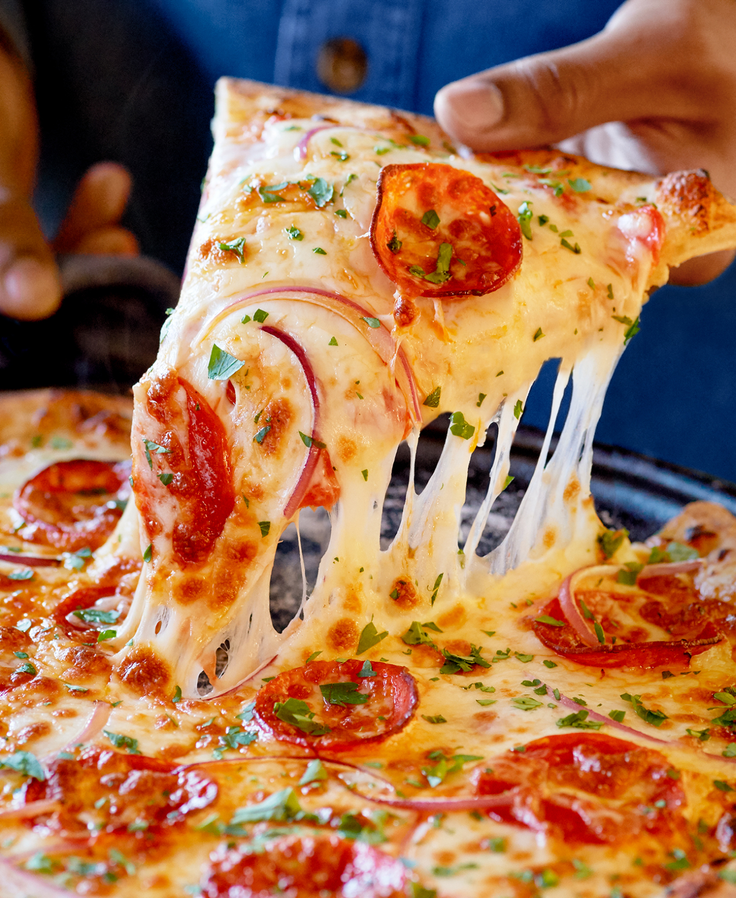

Pizza

Description:
Pizza is an Italian dish. It consists of a base of dough , the pizza base, on which foods such as
cheese or cheese analogues, tomatoes, olives, mushrooms, vegetables and meat are placed, which is usually baked
in an oven.
Ingredients:
For the pizza dough:
- 1 & 1/2 cups (355 ml) warm water (105°F-115°F).
- 1 package (2 & 1/4 teaspoons) active dry yeast.
- 3 & 3/4 cups (490g) bread flour.
- 2 tablespoons extra virgin olive oil (omit if cooking pizza in a wood-fired pizza oven).
- 2 teaspoons kosher salt.
- 1 teaspoon sugar.
For making the pizza and toppings:
- Extra virgin olive oil.
- Tomato sauce (smooth or pureed)
- Firm mozzarella cheese, grated
fresh, soft mozzarella cheese, separated into small clumps
fontina cheese, grated
parmesan cheese, grated
feta cheese.
- Crumbled
Mushrooms, very thinly sliced if raw, otherwise first sautéed
Bell peppers, stems and seeds removed, very thinly sliced
Italian pepperoncini, thinly sliced
Italian sausage, cooked ahead and crumbled
Sliced black olives.
- Chopped fresh basil
- Baby arugula, tossed in a little olive oil, added as pizza comes out of the oven
- Pepperoni, thinly sliced
Onions, thinly sliced raw or caramelized
Ham, thinly sliced.
Preparing the pizza:
- Preheat the pizza stone (or pizza pan or baking sheet).
- Divide the dough into 2 balls.
- Prep the toppings.
- Flatten the dough ball, and stretch out into a round.
- Brush the dough top with olive oil.
- Sprinkle the pizza peel with cornmeal, put flattened dough on top.
- Spread with tomato sauce and sprinkle with toppings.
- Slide pizza into the oven.
- Bake: Bake pizza in the 475°F oven, one at a time, until the crust is browned and the
cheese is golden, about 10 to 15 minutes. If you want, toward the end of the cooking time, you can sprinkle
on a little more cheese.
Enjoy!
Home